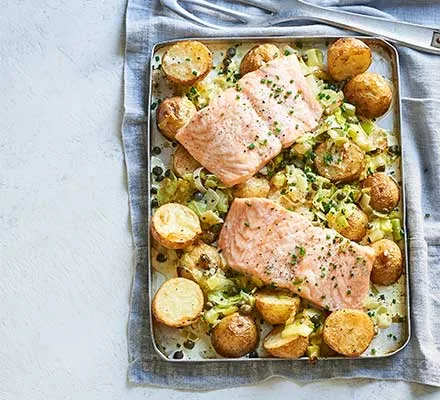

Creamy Salmon and Leak

Description
Taken from
BBC Good Food
this is one of my favourite meals to cook!
Ingredients
- 250g baby potatoes , thickly sliced
- 2 tbsp olive oil
- 1 leek , halved, washed and sliced
- 1 garlic clove , crushed
- 70ml double cream
- 1 tbsp capers , plus extra to serve
- 1 tbsp chives , plus extra to serve
- 2 skinless salmon fillets
- mixed rocket salad , to serve (optional)
Steps
-
Heat the oven to 200C/180C fan/gas 6. Bring a medium pan of water to the
boil. Add the potatoes and cook for 8 mins. Drain and leave to steam-dry
in a colander for a few minutes. Toss the potatoes with ½ of the oil and
plenty of seasoning in a baking tray. Put in the oven for 20 mins,
tossing halfway through the cooking time.
-
Meanwhile, heat the remaining oil in a frying pan over a medium heat.
Add the leek and fry for 5 mins, or until beginning to soften. Stir
through the garlic for 1 min, then add the cream, capers and 75ml hot
water, then bring to the boil. Stir through the chives.
-
Heat the grill to high. Pour the creamy leek mixture over the potatoes,
then sit the salmon fillets on top. Grill for 7-8 mins, or until just
cooked through. Serve topped with extra chives and capers and a salad on
the side, if you like.